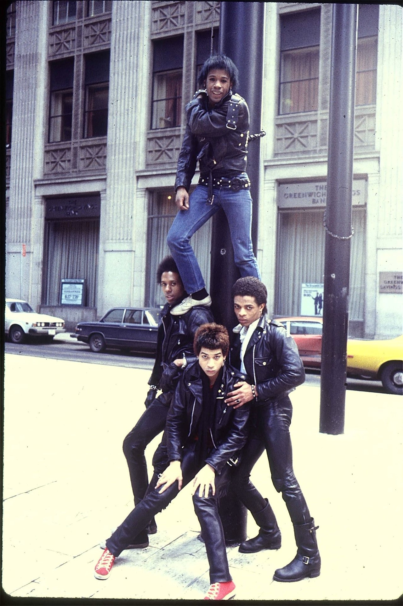
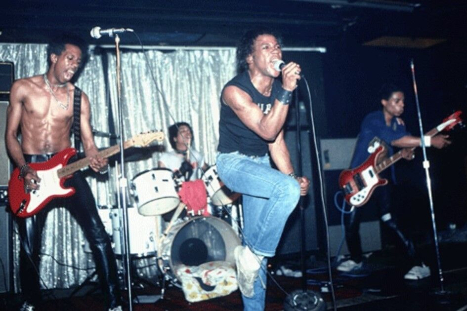
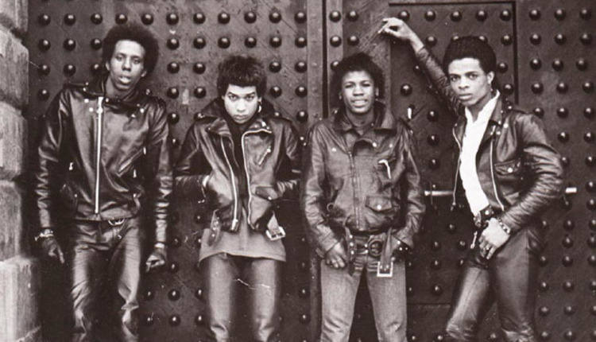

Another band from the early 70’s era that is frequently cited as pioneers is Pure Hell. The Philly band grew its rapport in the New York City scene and not only gained the respect of peers such as the New York Dolls and the Ramones but also achieved notoriety in the UK punk scene via their successful tour in that country. Although some of their music didn’t see the light of day in recording form, their music eventually made its way to Henry Rollins who eventually released it on his own label. Rollins told Dazed “If the album had come out when they made it, that would have been a game-changer. I believe (it) would have had a tremendous impact”.
How well do you know your punk history? I’m sure in recent years you’ve gotten well versed on Bad Brains and Death, the bands that helped shape the hardcore and punk sound, but are you hip to Pure Hell? Bad Brains holds the spot for most influential punk band, Black or otherwise, in many folks’ eyes, it would be a grave mistake to ignore another forefather to this genre. 70s punk band Pure Hell was Philadelphia bred and gained notoriety after being discovered by Curtis Knight, which eventually led to them to be based and welcomed primarily in the UK. Roktober Magazine said, “Their recordings boast all the unaffected grime of the Dead Boys, the far-sighted musicality of the Voidoids, the metallic heft of the Stooges, excellent guitar playing, powerful vocals, a propulsive rhythm section…” all the makings of a seminal punk band. Although they only released on UK single during their “prime,” they followed with an album nearly 30 years later in 2005 entitled “Noise Addiction.”
After the tapes resurfaced, nearly everyone who heard the record became an instant fan, including Rollins. “If the album had come out when they made it, that would have been a game changer,” he says. “I believe [it] would have had a tremendous impact. It’s one of those missed opportunity stories.” But it is also a found opportunity story. They are now getting recognition for their music and historical role. In 2012 they reformed to play their first show since 1979, with Rancid, Buzzcocks, Public Image Ltd, and Social Distortion. Pure Hell will find their way back into the story of New York punk, and it will be a more interesting story for their rediscovery.

In the mid-seventies, many people felt excluded from and disdained by the mainstream of rock and roll, which had largely come to represent itself as a straight white boys and girls club full of superrich rock stars. The narrow image fostered attitudes of implicit racism and homophobia that exploded in the 1979 “Disco Sucks” backlash. This despite the fact that rock and roll began as interracial music built on the flamboyantly ambiguous sexuality of Little Richard, the racy short stories of Chuck Berry, the grooves of Chubby Checker, the edgy beats of Bo Diddley, and a great many unsung black female performers.
Now we tend to remember 70s rock differently, not so much as the era of KISS or the Eagles, but as the transgressive time of David Bowie, Iggy Pop, Lou Reed, and Freddie Mercury, of the huge commercial and creative triumphs of women-led bands like Fleetwood Mac and Heart, of punk and new wave outsiders setting the template for four decades of alternative rock: The Ramones, Patti Smith, the Sex Pistols, Blondie, The Clash, Joy Division, Talking Heads, Gary Numan, Kraftwerk…. We remember it, still, as a time when rock was mostly white, and when black artists mostly recorded disco, funk, soul, and R&B.
The record industry and radio markets had segregated, and it would stay that way into the 80s, though jazz artists like Miles Davis made serious inroads into rock experimentation, bands like Parliament/Funkadelic released hard rock psychedelia, Prince channeled both Little Richard and Chuck Berry, and early punks like Detroit’s Death and Philadelphia’s Pure Hell made groundbreaking punk and metal. The former escaped critical notice, but the latter became famous, then disappeared from rock history for decades.
Death, the visionary trio of brothers who were recently rediscovered and celebrated, never really made it in their time outside of a small circle. Pure Hell, on the other hand, were an integral part of the New York punk scene and stars in Europe, and have been forgotten by most official punk histories. They “lived with the New York Dolls and played with Sid Vicious,” writes Cassidy George at Dazed, “but they’ve been largely written out of cultural history.” They are sometimes written back in, just as, to their dismay, they were promoted: as the “first black punk band.” But there’s far more to their history than that.
“I don’t want to be remembered just because we were black,” says singer Kenny “Stinker” Gordon. “I want to be remembered for being a part of the first tier of punk in the 70s.” He is not exaggerating. New York Dolls guitarist Johnny Thunders promoted the band, leading to gigs as Max’s Kansas City and a feature in Andy Warhol’s Interview magazine, “marking their ‘place’ in a scene of cultural influencers.” They appeared in a 1978 issue of Melody Maker during their UK tour, in a photo with Sid Vicious, who wears his swastika t-shirt and padlock and chain. (Gordon also wore a swastika t-shirt onstage.) Just one of many second-page write-ups in Melody Maker, NME, and the European press.
All of the hype surrounding the band is part of the historical record, for those who look through backpages and archives, but their music has mostly gone unheard for over a generation, largely because their album Noise Addiction only came out in 2006. After they released their first single in ‘78, then refused to change their sound for a record deal, their manager Curtis Knight absconded with the master tapes and refused to release them. Listen to their debut single, a cover of “These Boots Are Made for Walking,” above. Melody Maker called it, with a wink, “the former Nancy Sinatra hit.” The song reached number four on the UK alternative charts.
Pure Hell describe their journey through the mid-seventies New York punk scene in the montage of interview clips at the top, scored by wicked, riff-laden recordings of their songs. The story began with four friends from a tough neighborhood in West Philadelphia. “We dressed in drag and wore wigs, basically daring people to bother us. People in the neighborhood would say, ‘Don’t go into houses with those guys, you may not come out!’” They were pressured to join a gang, says bassist Lenny “Steel” Boles, but refused. They packed up a U-Haul and moved into the Chelsea Hotel, then played their first show across the street at Mother’s.
Legendary stories about the band abound. (They played Sid Vicious’ last appearance onstage and were caught up in the media circus surrounding Nancy Spungen’s death). What’s most interesting about them is the music and their lasting influence, despite what Boles describes as being “snubbed” by record labels unless they agreed to “do this Motown thing, saying like, ‘You guys are black so you’ve gotta do something that’s danceable.” After losing their manager and their masters, they settled in L.A., where they played with the Germs and the Cramps but “lost their momentum,” writes George.
“It was totally over by 1980,” says Gordon. All the same, their heavy proto-metal sound, drawing from reggae and Hendrix as much as from Bowie and Nancy Sinatra, sparked the admiration of many emerging punk bands, including Washington, DC legends Bad Brains, who acknowledge the debt their furious reggae/metal thrash owes to Pure Hell. Bad Brains broke color barriers in New York a few years later, and got most of the credit for it, largely because Pure Hell left behind nothing but a mysterious single and a “rumor,” says Henry Rollins, “that they had made an album and that it was sitting in a closet.”

The band’s story began in West Philadelphia in 1974, when four teenagers – lead vocalist Kenny ‘Stinker’ Gordon, bassist Lenny ‘Steel’ Boles, guitarist Preston ‘Chip Wreck’ Morris and drummer Michael ‘Spider’ Sanders, set out to follow in the footsteps of their musical idols. A shared obsession with the sounds of Iggy, Bowie, Cooper, and Hendrix inspired them to create music that was louder, faster and more provocative than even those artists’ most experimental records. Pure Hell’s unique sound led them to New York, where they became characters in a seminal subculture recognised today as punk. As musicians of colour, their contribution to a predominately white underground scene is all the more significant. “We were the first black punk band in the world,” says Boles. “We were the ones who paid the dues for it, we broke the doors down. We were genuinely the first. And we still get no credit for it.” [YET]
The title of the ‘first black punk band’ has, in recent years, been informally given to Detroit-based Death, whose music was mostly unheralded at the time but has since been rediscovered and praised for its progressive ideas. But while Death were creating proto-punk music in isolation in the early 1970s, Pure Hell were completely entrenched in the New York City underground scene, living and performing alongside [other] legends of American punk. Arriving the same month that Patti Smith and Television began their two-month residencies at CBGB and leaving just after Nancy Spungen’s murder, Pure Hell’s active years in the city aligned perfectly with the birth and death of a dynamic chapter of music history. “I don’t want to be remembered just because we were black,” says Kenny Gordon. “I want to be remembered for being a part of the first tier of punk in the 70s.”
Being just 155km from Greenwich Village, Philadelphia was somewhat of a pipeline of New York subculture – Gordon remembers his teenage years at the movie theatre watching John Waters films like Polyester and Pink Flamingos, and hanging out at Artemis, a spot frequented by Philly scenesters like Nancy Spungen and Neon Leon. “I heard (The Rolling Stones’) ‘Satisfaction’ and knew it was the kind of music I wanted to play,” recalls bassist Lenny Boles. “I was too poor to afford instruments, so if someone had one, I would befriend them.”
Pure Hell swan dove into the New York underground scene in 1975, in pursuit of the people, places, and sounds they’d read about for years in the pages of Rock Scene and Cream magazine. The band moved into the Chelsea Hotel, the temporary home of a long list of influential characters, including Bob Dylan, Leonard Cohen, Janis Joplin, Jim Morrison, Edie Sedgwick, Patti Smith, and Robert Mapplethorpe. Their first gig in the city was hosted at Frenzy’s thrift, a storefront on St. Marks place, where guitarist Preston Morris “rather memorably caught the amplifier on fire due to a combination of maximum volume and faulty wires”, says Gordon. Drummer Michael Sanders’ friendship with Neon Leon led the band to the New York Dolls, who were acting as mentors for younger artists like Debbie Harry and Richard Hell at the time. Pure Hell was soon invited to perform for the Dolls in their loft.